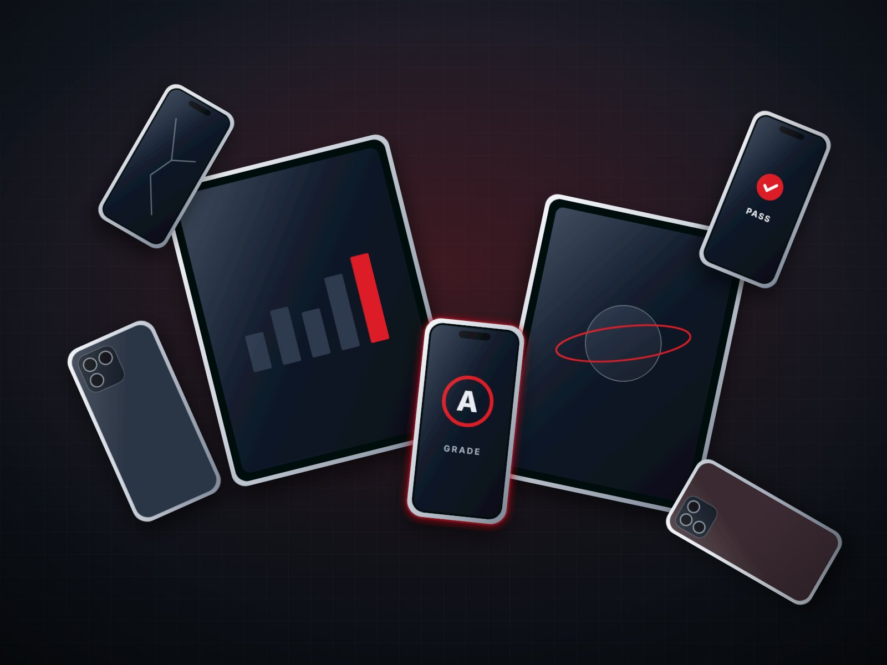
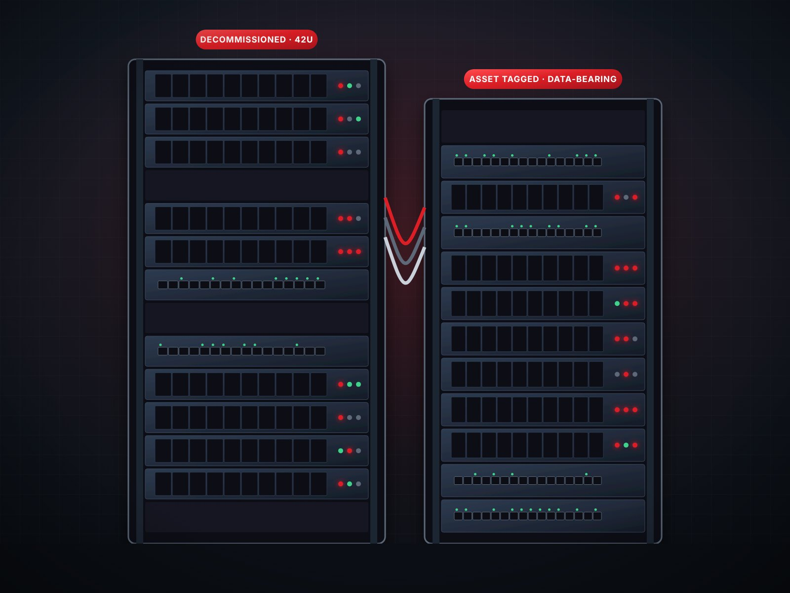
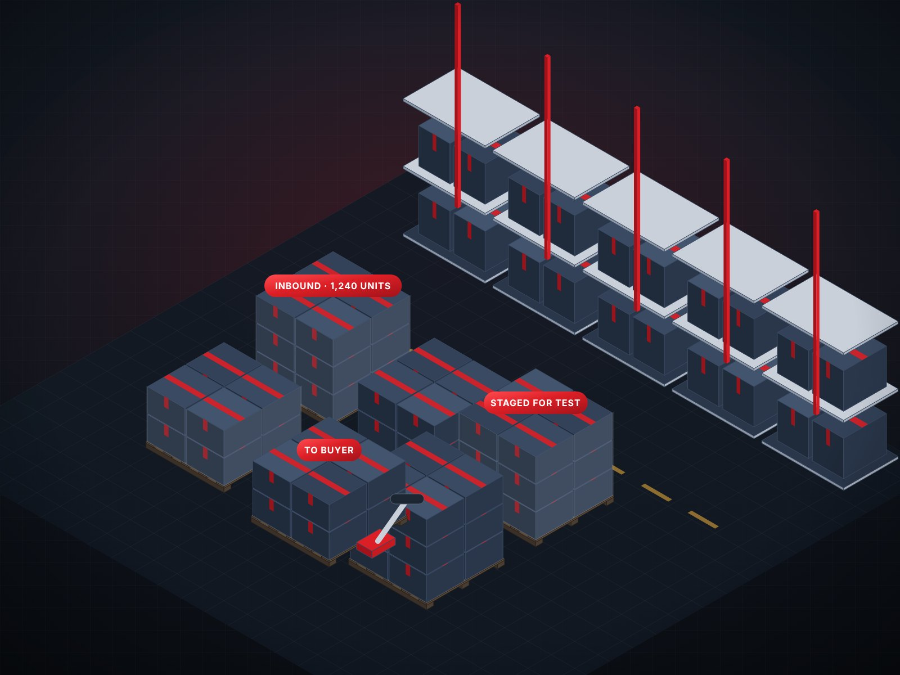
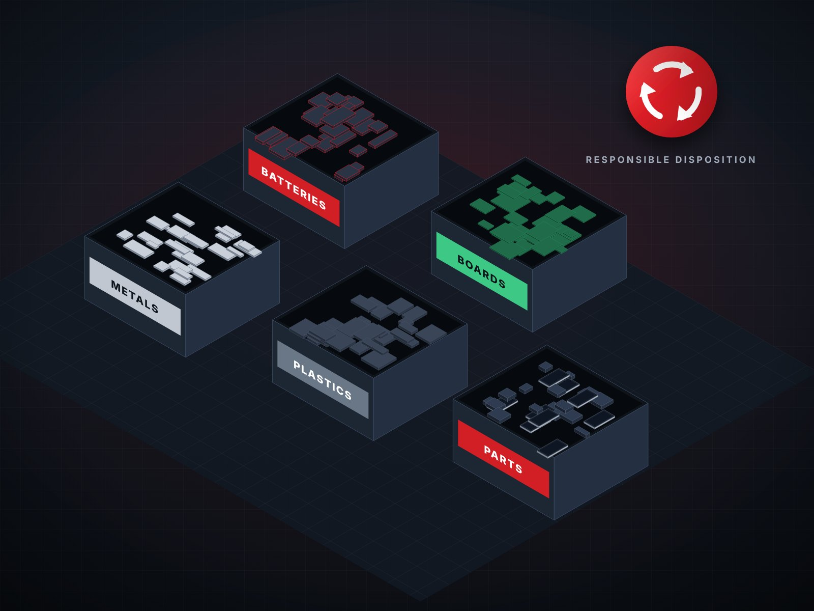

photos/assets-mobile-devices.jpg or .pngMobile Devices & Tablets
Trade-ins, returns, upgrades, and recovered inventory requiring testing, grading, and resale.
From consumer electronics and enterprise technology to industrial equipment, Greentech, Healthtech, and commercial inventory, Intelegistics develops and operates programs that recover value throughout the product lifecycle.
Typical categories across our programs. If you’re not sure where yours fits, ask us.

photos/assets-mobile-devices.jpg or .pngTrade-ins, returns, upgrades, and recovered inventory requiring testing, grading, and resale.

photos/assets-computers-it.jpg or .pngLaptops, desktops, servers, networking equipment, and technology refresh assets.
photos/assets-consumer-electronics.jpg or .pngAudio, wearables, smart-home products, accessories, and connected devices.

photos/assets-greentech-energy.jpg or .pngSolar components, energy storage, power systems, and renewable-energy technology.

photos/assets-healthtech-medical.jpg or .pngHealthcare technology, diagnostic equipment, and related commercial assets.

photos/assets-industrial-commercial.jpg or .pngMachinery, tools, automation components, and commercial surplus.

photos/assets-retail-excess.jpg or .pngOverstock, customer returns, discontinued products, and liquidation inventory.

photos/assets-end-of-life.jpg or .pngAssets requiring parts recovery, responsible recycling, or certified downstream disposition.
Returned, surplus, and retired assets require different handling strategies. We design and execute programs that move inventory efficiently from receipt through final disposition.
Receive, inspect, grade, and route returned products to the highest-value practical outcome.
Manage product intake, verification, processing, and recovery across structured acquisition programs.
Convert overstock, discontinued merchandise, and underutilized assets into working capital.
Restore serviceable assets, extend useful life, and return products to productive use.
Recover usable components and coordinate responsible downstream disposition when resale is no longer viable.
Intelegistics supports manufacturers, retailers, distributors, enterprise organizations, technology providers, asset owners, and international trading companies seeking to recover value, improve operational performance, and expand secondary-market opportunities.
Whether you’re managing customer returns, excess inventory, commercial equipment, or end-of-life assets, we’ll help identify the right operating model, processing strategy, and recovery channels.